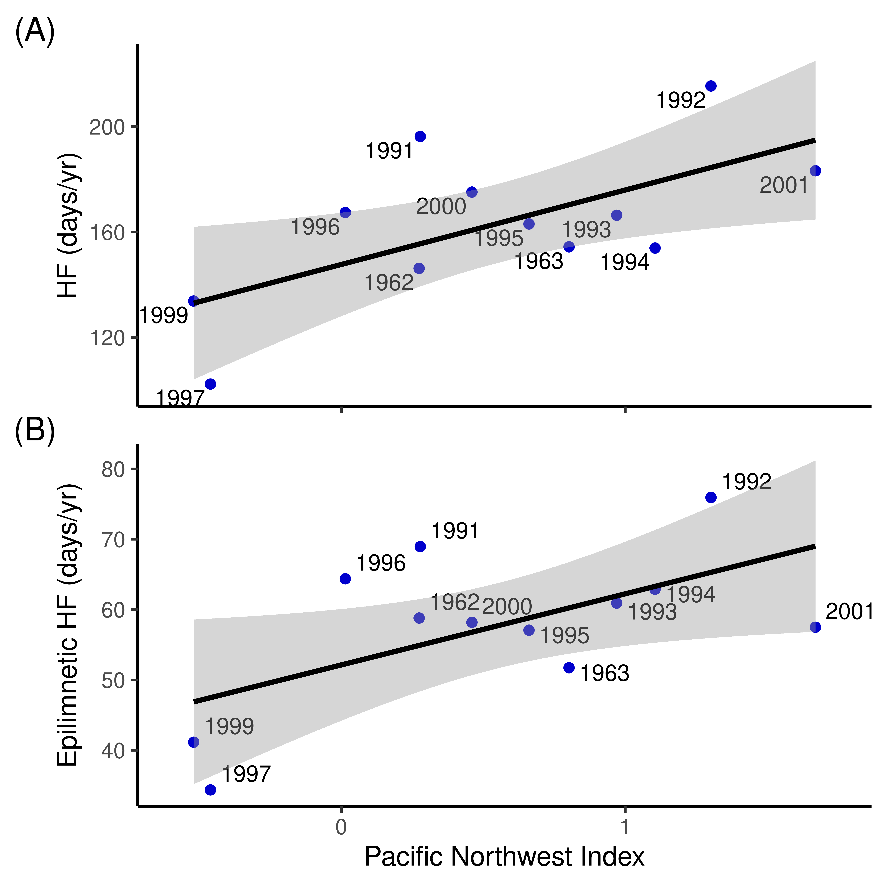

knitr::opts_chunk$set(out.width = "60%", fig.width = 5, fig.height = 4)
library(tidyverse)
library(readxl)
library(janitor)
library(patchwork)
library(ggrepel)
# Systat file
d <- read_excel("Data/Steff Fig. 4_11.xls") |>
clean_names() |>
select(year, af, af_epi, hf, hf_epi, pni)
blu <- "blue3" # Standard point colourHypoxia factor
Setup
Stats
m1 <- lm(hf ~ pni, data = d)
summary(m1)
Call:
lm(formula = hf ~ pni, data = d)
Residuals:
Min 1Q Median 3Q Max
-32.393 -12.731 -6.018 15.693 40.733
Coefficients:
Estimate Std. Error t value Pr(>|t|)
(Intercept) 147.692 8.823 16.740 1.21e-08 ***
pni 28.266 10.438 2.708 0.022 *
---
Signif. codes: 0 '***' 0.001 '**' 0.01 '*' 0.05 '.' 0.1 ' ' 1
Residual standard error: 23.32 on 10 degrees of freedom
(1 observation deleted due to missingness)
Multiple R-squared: 0.4231, Adjusted R-squared: 0.3654
F-statistic: 7.334 on 1 and 10 DF, p-value: 0.02201m2 <- lm(hf_epi ~ pni, data = d)
summary(m2)
Call:
lm(formula = hf_epi ~ pni, data = d)
Residuals:
Min 1Q Median 3Q Max
-13.1067 -6.4285 -0.7182 5.5814 14.0076
Coefficients:
Estimate Std. Error t value Pr(>|t|)
(Intercept) 52.138 3.563 14.635 4.43e-08 ***
pni 10.103 4.215 2.397 0.0375 *
---
Signif. codes: 0 '***' 0.001 '**' 0.01 '*' 0.05 '.' 0.1 ' ' 1
Residual standard error: 9.418 on 10 degrees of freedom
(1 observation deleted due to missingness)
Multiple R-squared: 0.3649, Adjusted R-squared: 0.3014
F-statistic: 5.746 on 1 and 10 DF, p-value: 0.0375DHARMa::simulateResiduals(m1, plot = TRUE)Object of Class DHARMa with simulated residuals based on 250 simulations with refit = FALSE . See ?DHARMa::simulateResiduals for help.
Scaled residual values: 0.356 0.228 0.956 0.92 0.34 0.16 0.468 0.796 0.068 0.564 0.72 0.324DHARMa::simulateResiduals(m2, plot = TRUE)Object of Class DHARMa with simulated residuals based on 250 simulations with refit = FALSE . See ?DHARMa::simulateResiduals for help.
Scaled residual values: 0.68 0.16 0.924 0.892 0.468 0.496 0.448 0.9 0.068 0.264 0.528 0.116Figure
d$nudge_y <- 0
d$nudge_y[d$year %in% c(1995, 1993, 1994, 1963)] <- -3
d$nudge_y[d$year == 1993] <- -3.5
g0 <- ggplot(d, aes(x = pni)) +
theme_classic() +
theme(plot.margin = margin(), plot.tag.position = c("topleft")) +
scale_x_continuous(name = "Pacific Northwest Index", limits = c(-0.6, 1.75))
g1 <- g0 +
theme(axis.text.x = element_blank(), axis.title.x = element_blank()) +
geom_point(aes(y = hf), colour = blu) +
geom_text(aes(y = hf, label = year), size = 3.25, hjust = 1.1, vjust = 1, nudge_y = -2) +
stat_smooth(aes(y = hf), method = "lm", se = TRUE, colour = "black") +
ylim(100, NA) +
labs(y = "HF (days/yr)")
g2 <- g0 +
geom_point(aes(y = hf_epi), colour = blu) +
geom_text(aes(y = hf_epi, label = year), size = 3.25, hjust = -0.2, vjust = -0.5,
nudge_y = d$nudge_y) +
stat_smooth(aes(y = hf_epi), method = "lm", se = TRUE, colour = "black") +
labs(y = "Epilimnetic HF (days/yr)")
g1 / g2 + plot_annotation(tag_levels = "A")`geom_smooth()` using formula = 'y ~ x'Warning: Removed 1 rows containing non-finite values (`stat_smooth()`).Warning: Removed 1 rows containing missing values (`geom_point()`).Warning: Removed 1 rows containing missing values (`geom_text()`).`geom_smooth()` using formula = 'y ~ x'Warning: Removed 1 rows containing non-finite values (`stat_smooth()`).Warning: Removed 1 rows containing missing values (`geom_point()`).Warning: Removed 1 rows containing missing values (`geom_text()`).